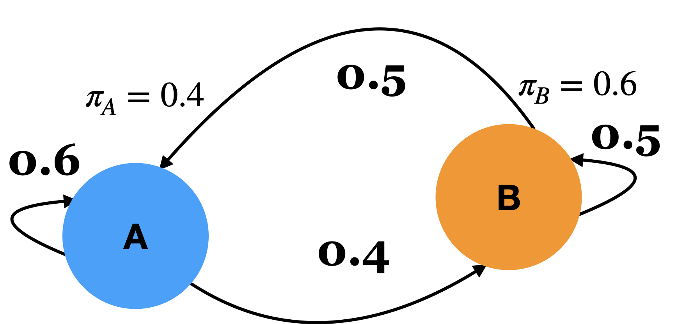

DSCI 575 - Quiz 1 practice questions#
Note that these are just sample questions for you to get an idea about what to expect in the quiz. They are neither meant to cover all the topics we have covered in the last four lectures nor meant to be indicative of the number of questions in the actual quiz.
Question 1#
Let’s say P(sunny today | sunny yesterday) = 0.8 and P(sunny today | cloudy yesterday) = 0.4. What is the transition matrix? State your assumptions as needed.
Exercise 1.1c: V’s Solutions!
sunny |
cloudy |
|
|---|---|---|
sunny |
0.8 |
0.2 |
cloudy |
0.4 |
0.6 |
Question 2#

Does a stationary distribution exist for this chain? Why or why not?
V’s Solution
Yes. Stationary distribution exists for this chain because all transitions are positive (>0).
Question 3#
For sentence segmentation in English, why is simple splitting on typical sentence ending markers (e.g., .', ?’, `!’) not enough? Give an example where such approach would fail.
V’s Solution
These markers are ambiguous in English and the sentence segmentation would fail on texts containing abbreviations such as Dr. or Ph.D.
Question 4#
Select all the statements which are true
[ ] In a realistic corpus, a word-based Markov model with
n=2typically has a larger state space than a character-based model with the samenvalue.[ ] The stationary distribution of a Markov chain is a probability distribution that remains unchanged over time, regardless of the initial state.
[ ] Higher perplexity of a language model on a test set indicates better accuracy in predicting the next words on the unseen test set.
[ ] In PageRank the webpage or node with the most incoming links gets the highest ranking.
[ ] The Viterbi algorithm can be used to determine the best hidden state sequence corresponding to a given observation sequence.
[ ] In the context of HMMs, like the \(\alpha\) values in the forward algorithm, the \(\delta\) values in the Viterbi algorithm represent the probability of being in state \(i\) at time \(t\) and observing the observations up to the current time step.
V’s Solution
[x] In a realistic corpus, a word-based Markov model with
n=2typically has a larger state space than a character-based model with the samenvalue.[x] The stationary distribution of a Markov chain is a probability distribution that remains unchanged over time, regardless of the initial state.
[ ] Higher perplexity of a language model on a test set indicates better accuracy in predicting the next words on the unseen test set.
[ ] In PageRank the webpage or node with the most incoming links gets the highest ranking.
[x] The Viterbi algorithm can be used to determine the best hidden state sequence corresponding to a given observation sequence.
[ ] In the context of HMMs, like the (\alpha) values in the forward algorithm, the (\delta) values in the Viterbi algorithm represent the probability of being in state (i) at time (t) and observing the observations up to the current time step.
Question 5#
State an advantage and a disadvantage of a word-based language model over a character-based language model in text generation.
V’s Solution
(Many possibilities)
Advantages: The generated text would have valid words even for smaller values of
n.Disadvantage: The state space and memory requirements can go up quite quickly.
Question 6#
Below is a hidden Markov model that relates numbers of ice creams eaten by Jason to the weather which we saw in class.

6.1#
Assume the observation sequence 3, 3, 2, 1 and a corresponding hidden state sequence HOT HOT HOT COLD for time steps t0, t1, t2, t3, respectively. Assuming HMM assumptions, what would be P(3 at t1 | HOT at t0, HOT at t1, 3 at t0)?
V’s Solution
P(3 at t1) \(\approx\) P(3 | HOT) = 0.4 because according to the HMM assumptions, the probability of any observation at a given time step only depends upon the hidden state at that time step and nothing else.
6.2#
Given this HMM, what method will you use to calculate P(3, 3, 2, 1) efficiently?
V’s Solution
The forward method which uses dynamic programming to efficiently compute probability of an observation sequence given HMM parameters (time complexity = \(\mathcal{O}(n^2T)\), where \(n\) is the number of hidden states and \(T\) is the number of time steps).
Question 7#
Should stopwords be removed when training an n-gram language model for text generation in order to focus on learning transitions between more meaningful words? Provide a brief explanation to support your answer.
V’s Solution
No, stopwords should not be removed. Although they may seem less “meaningful”, stopwords play a vital role in the structure and grammar of language. An n-gram model trained without them would fail to learn important syntactic patterns, leading to ungrammatical and unnatural text generation.
Question 8#
Suppose you have two language models A and B. Model A has a perplexity of 50 on a test set, and Model B has a perplexity of 200. Which model performs better, and why?
V’s Solution
Model A performs better. Lower perplexity indicates that the model is less “surprised” by the test data, i.e., it assigns higher probabilities to the observed sequences and therefore predicts more accurately.
Question 9#
Which of the following best describes the effect of increasing the temperature parameter in temperature sampling?
(A) It makes the model more deterministic by favouring the highest-probability tokens.
(B) It increases randomness by flattening the probability distribution over possible next tokens.
(C) It limits the output to only the top-k tokens.
(D) It prevents the repetition of any previously seen token.
V’s Solution
B
Question 10#
In lab 2, you trained HMMs using hmmlearn’s GaussianHMM because the observations were continuous and not discrete. What exactly was an observation in this problem? Be concise and clear.
V’s Solution
Each observation was a 15-dimensional MFCC feature vector corresponding to the audio in a time frame.